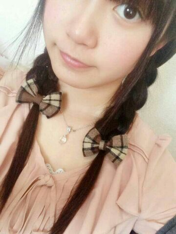
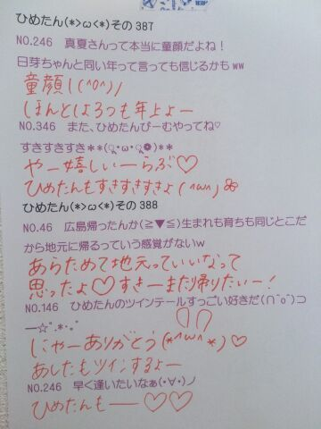

| 2014/04 04 Fri | ひめたん(*>ω<*)そ の429 |
いつもみなさんが日記のコメント欄に
書いてくださる質問にたいして
ひめたんがお答えしてるんだけどね
今日は気になる質問を見つけたので
紹介してみますよー
 いつも質問返しばかりで大変だと思うので、
いつも質問返しばかりで大変だと思うので、
逆に質問ありますか？
それではみなさんに質問です( ^O^ )ノ
◎ひめたんのこと好きー？
◎じゃあぷりんのことは好きー？
◎乃木坂ちゃんの全48曲の中でどの歌が好きー？
答えて答えてー♪♪

今日は甘えたちゃんな
万理華でした
あたしがおねーちゃんづらしてみた！
よしよししたり
あごすりすりしたり
彼女は大学生になってもかわらんな＊
あっ陽菜ちゃんがこっちみてる......

京都ー( ^O^ )
全国握手会、個別握手会と
2日間よろしくお願いします！
握手会が久々すぎて
んもうー待ちわびてたほんとに！
そしてライブも久々で
なんかもういろいろ久々なんだね！
これだから制作期間はうずうずうずうず......
明日の全握は
みおちゃん (堀未央奈ちゃん)と
ぺあです☆
みおちゃんとは初めてだから
みおちゃんファンのみなさんとも
はじめましてになるのかしら
よかったらひめたんとも
仲良くしてください(＊^_^＊)
みおちゃんのんびりがんばろうねー
そして個握ですが
京都のみなさんお待たせしました
京都は初の2部制になりましたー！
4部・5部に参加します♪
いくよーって方
楽しみにしてますよー(((o(*゜▽゜*)o)))
 ひめたんは犬派？猫派？
ひめたんは犬派？猫派？
それとも、ワオキツネザル派？
いぬ派。
わんちゃん飼いたい(((o(*゜▽゜*)o)))
ヨーキーとトイプードル好きです。
ひめたんにはどうしてもしてしまう
クセとかってありますか？
乃木ちゃん入るまでは
気づかなかったんだけど
やたらめったら手を口元に持って来たがるそう。
ひめたんの好きな馬の毛の色は何ですか？
うーなんだろう
白馬で金の鬣(たてがみ)とか(＊^^＊)
ひめたんがよかったら、
僕とコンビを組んで芸人になりませんか？
待ってあたしお笑いのセンス
ぜーんぜーんないからね
うーん考えときまーす♪♪
プリン味のゴキブリかー
ゴキブリ味のプリン
どちらかって言われたら？？
想像したら、め、めまいが......ぱたっ
ひめたんの日記の
コメント欄下２ケタに46を踏んだ方へ
手書きでコメ返するコーナー
＼ ひめたん46 ／

いつもコメントたくさん
ありがとうございます
そう、今回のシングルが
「気づいたら片想い」なだけに
僕は私はひめたんに
気づいたら片想いしてたーって方が
たくさんいらっしゃったけど
え、は？ちょっと何言ってんの？
ひめたんだってあなたのこと好きだよ
これって両想いじゃないの？ねー？
ってゆーツンデレごっこを
ひとりでしてましたー(〃ω〃)んふえ
(＊´・ω・＊)
コメント(792)
2014/04/04 23:54